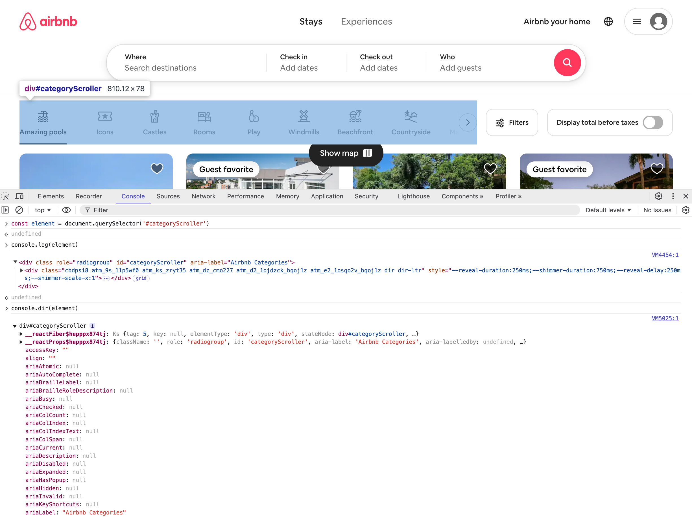

console.dir FunctionThe console.dir function logs an object to the console as a list of properties. The object is displayed hierarchically with toggles to expand and show more information, including child objects.
It can be useful to inspect a DOM node as an object, since using console.log prints the HTML representation. See screenshot, below:
